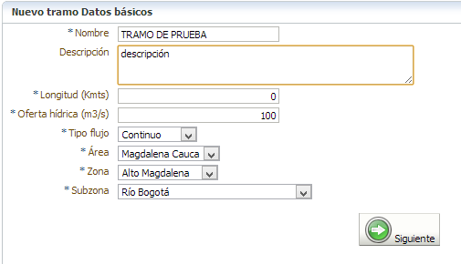
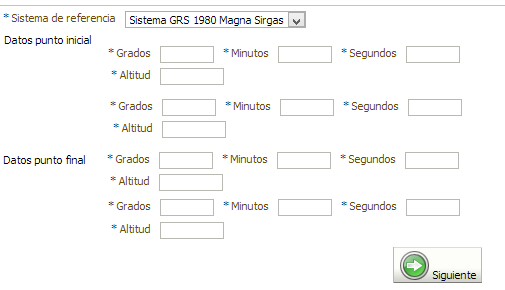
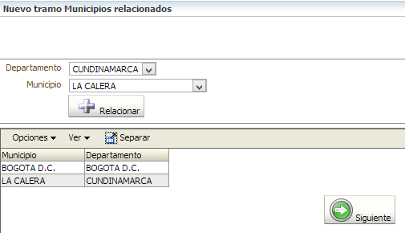

Registre al menos un tramo para cada una de las fuentes superficiales registradas en el sistema. Lo anterior debido a que posteriormente las captaciones que usted registre para una fuente deberán estar vinculadas a un tramo. Ingrese los datos solicitados y de clic en el botón "Siguiente"

El sistema le solicitará los datos geográficos del tramo para su posterior espacialización. Usted deberá ingresar las coordenadas geográficas en Latitud y Longitud del punto inicial y del punto final del tramo. Cuando termine de clic en el botón "Siguiente".

El sistema solicitará qiue relacione los municipios que atraviesa el tramo. De clic en el botón "Relacionar" por cada municipio y de clic en el botón "Siguiente".
